ml
Deep Learning
Machine learning today is one of the most important, and fastest growing, fields of technology. Applications of machine learning are becoming ubiquitous, and solutions learned from data are increasingly displacing traditional hand-crafted algorithms. This has not only led to improved performance for existing technologies but has opened the door to a vast range of new capabilities that would be inconceivable if new algorithms had to be designed explicitly by hand.
One particular branch of machine learning, known as deep learning, has emerged as an exceptionally powerful and general-purpose framework for learning from data. Deep learning is based on computational models called neural networks which were originally inspired by mechanisms of learning and information processing in the human brain. The field of artificial intelligence, or AI, seeks to recreate the powerful capabilities of the brain in machines, and today the terms machine learning and AI are often used interchangeably. Many of the AI systems in current use represent ap-
plications of machine learning which are designed to solve very specific and focused problems, and while these are extremely useful they fall far short of the tremendous breadth of capabilities of the human brain. This has led to the introduction of the term artificial general intelligence, or AGI, to describe the aspiration of building machines with this much greater flexibility. After many decades of steady progress, machine learning has now entered a phase of very rapid development. Recently, massive deep learning systems called large language models have started to exhibit remarkable capabilities that have been described as the first indications of artificial general intelligence (Bubeck et al., 2023).
Chapter 12
1.1. The Impact of Deep Learning
We begin our discussion of machine learning by considering four examples drawn from diverse fields to illustrate the huge breadth of applicability of this technology and to introduce some basic concepts and terminology. What is particularly remarkable about these and many other examples is that they have all been addressed using variants of the same fundamental framework of deep learning. This is in sharp contrast to conventional approaches in which different applications are tackled using widely differing and specialist techniques. It should be emphasized that the examples we have chosen represent only a tiny fraction of the breadth of applicability for deep neural networks and that almost every domain where computation has a role is amenable to the transformational impact of deep learning.
1.1.1 Medical diagnosis
Consider first the application of machine learning to the problem of diagnosing skin cancer. Melanoma is the most dangerous kind of skin cancer but is curable if detected early. Figure 1.1 shows example images of skin lesions, with malignant melanomas on the top row and benign nevi on the bottom row. Distinguishing between these two classes of image is clearly very challenging, and it would be virtually impossible to write an algorithm by hand that could successfully classify such images with any reasonable level of accuracy.
This problem has been successfully addressed using deep learning (Esteva et al., 2017). The solution was created using a large set of lesion images, known as
Figure 1.1 Examples of skin lesions corresponding to dangerous malignant melanomas on the top row and benign nevi on the bottom row. It is difficult for the untrained eye to distinguish between these two classes.
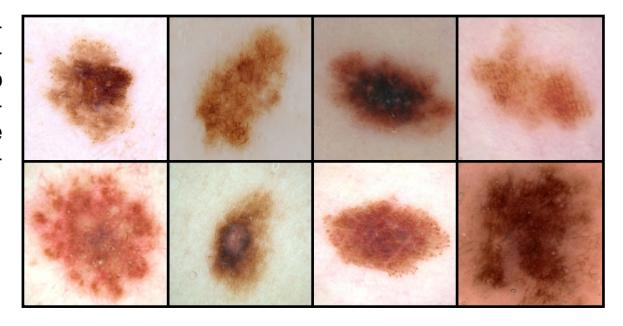
a training set, each of which is labelled as either malignant or benign, where the labels are obtained from a biopsy test that is considered to provide the true class of the lesion. The training set is used to determine the values of some 25 million adjustable parameters, known as weights, in a deep neural network. This process of setting the parameter values from data is known as learning or training. The goal is for the trained network to predict the correct label for a new lesion just from the image alone without needing the time-consuming step of taking a biopsy. This is an example of a supervised learning problem because, for each training example, the network is told the correct label. It is also an example of a classification problem because each input must be assigned to a discrete set of classes (benign or malignant in this case). Applications in which the output consists of one or more continuous variables are called regression problems. An example of a regression problem would be the prediction of the yield in a chemical manufacturing process in which the inputs consist of the temperature, the pressure, and the concentrations of reactants.
An interesting aspect of this application is that the number of labelled training images available, roughly 129,000, is considered relatively small, and so the deep neural network was first trained on a much larger data set of 1.28 million images of everyday objects (such as dogs, buildings, and mushrooms) and then fine-tuned on the data set of lesion images. This is an example of transfer learning in which the network learns the general properties of natural images from the large data set of everyday objects and is then specialized to the specific problem of lesion classification. Through the use of deep learning, the classification of skin lesion images has reached a level of accuracy that exceeds that of professional dermatologists (Brinker et al., 2019).
1.1.2 Protein structure
Proteins are sometimes called the building blocks of living organisms. They are biological molecules that consist of one or more long chains of units called amino acids, of which there are 22 different types, and the protein is specified by the sequence of amino acids. Once a protein has been synthesized inside a living cell, it folds into a complex three-dimensional structure whose behaviour and interactions are strongly determined by its shape. Calculating this 3D structure, given the amino acid sequence, has been a fundamental open problem in biology for half a century that had seen relatively little progress until the advent of deep learning.
The 3D structure can be measured experimentally using techniques such as X-ray crystallography, cryogenic electron microscopy, or nuclear magnetic resonance spectroscopy. However, this can be extremely time-consuming and for some proteins can prove to be challenging, for example due to the difficulty of obtaining a pure sample or because the structure is dependent on the context. In contrast, the amino acid sequence of a protein can be determined experimentally at lower cost and higher throughput. Consequently, there is considerable interest in being able to predict the 3D structures of proteins directly from their amino acid sequences in order to better understand biological processes or for practical applications such as drug discovery. A deep learning model can be trained to take an amino acid sequence as input and generate the 3D structure as output, in which the training data
ł
Figure 1.2 Illustration of the 3D shape of a protein called T1044/6VR4. The green structure shows the ground truth as determined by X-ray crystallography, whereas the superimposed blue structure shows the prediction obtained by a deep learning model called AlphaFold. [From Jumper et al. (2021) with permission.]
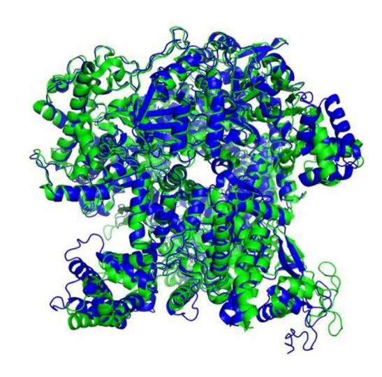
consist of a set of proteins for which the amino acid sequence and the 3D structure are both known. Protein structure prediction is therefore another example of supervised learning. Once the system is trained it can take a new amino acid sequence as input and can predict the associated 3D structure (Jumper et al., 2021). Figure 1.2 compares the predicted 3D structure of a protein and the ground truth obtained by X-ray crystallography.
1.1.3 Image synthesis
In the two applications discussed so far, a neural network learned to transform an input (a skin image or an amino acid sequence) into an output (a lesion classification or a 3D protein structure, respectively). We turn now to an example where the training data consist simply of a set of sample images and the goal of the trained network is to create new images of the same kind. This is an example of unsupervised learning because the images are unlabelled, in contrast to the lesion classification and protein structure examples. Figure 1.3 shows examples of synthetic images generated by a deep neural network trained on a set of images of human faces taken in a studio against a plain background. Such synthetic images are of exceptionally high quality and it can be difficult tell them apart from photographs of real people.
This is an example of a generative model because it can generate new output examples that differ from those used to train the model but which share the same statistical properties. A variant of this approach allows images to be generated that depend on an input text string known, as a prompt, so that the image content reflects the semantics of the text input. The term generative AI is used to describe deep learning models that generate outputs in the form of images, video, audio, text, candidate drug molecules, or other modalities.
Figure 1.3 Synthetic face images generated by a deep neural network trained using unsupervised learning. [From https://generated.photos.]
1.1.4 Large language models
One of most important advances in machine learning in recent years has been the development of powerful models for processing natural language and other forms of sequential data such as source code. A large language model, or LLM, uses deep learning to build rich internal representations that capture the semantic properties of language. An important class of large language models, called autoregressive language models, can generate language as output, and therefore, they are a form of generative AI. Such models take a sequence of words as the input and for the output, generate a single word that represents the next word in the sequence. The augmented sequence, with the new word appended at the end, can then be fed through the model again to generate the subsequent word, and this process can be repeated to generate a long sequence of words. Such models can also output a special 'stop' word that signals the end of text generation, thereby allowing them to output text of finite length and then halt. At that point, a user could append their own series of words to the sequence before feeding the complete sequence back through the model to trigger further word generation. In this way, it is possible for a human to have a conversation with the neural network.
Such models can be trained on large data sets of text by extracting training pairs each consisting of a randomly selected sequence of words as input with the known next word as the target output. This is an example of self-supervised learning in which a function from inputs to outputs is learned but where the labelled outputs are obtained automatically from the input training data without needing separate human-
Figure 1.4 Plot of a training data set of N=10 points, shown as blue circles, each comprising an observation of the input variable x along with the corresponding target variable t. The green curve shows the function $\sin(2\pi x)$ used to generate the data. Our goal is to predict the value of t for some new value of t, without knowledge of the green curve.
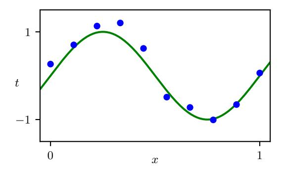
derived labels. Since large volumes of text are available from multiple sources, this approach allows for scaling to very large training sets and associated very large neural networks.
Large language models can exhibit extraordinary capabilities that have been described as the first indications of emerging artificial general intelligence (Bubeck et al., 2023), and we discuss such models at length later in the book. On the next page, we give an illustration of language generation, based on a model called GPT-4 (OpenAI, 2023), in response to an input prompt 'Write a proof of the fact that there are infinitely many primes; do it in the style of a Shakespeare play through a dialogue between two parties arguing over the proof.'.
1.2. A Tutorial Example
For the newcomer to the field of machine learning, many of the basic concepts and much of the terminology can be introduced in the context of a simple example involving the fitting of a polynomial to a small synthetic data set (Bishop, 2006). This is a form of supervised learning problem in which we would like to make a prediction for a target variable, given the value of an input variable.
1.2.1 Synthetic data
We denote the input variable by x and the target variable by t, and we assume that both variables take continuous values on the real axis. Suppose that we are given a training set comprising N observations of x, written $x_1,\ldots,x_N$, together with corresponding observations of the values of t, denoted $t_1,\ldots,t_N$. Our goal is to predict the value of t for some new value of t. The ability to make accurate predictions on previously unseen inputs is a key goal in machine learning and is known as generalization.
We can illustrate this using a synthetic data set generated by sampling from a sinusoidal function. Figure 1.4 shows a plot of a training set comprising N=10 data points in which the input values were generated by choosing values of $x_n$, for $n=1,\ldots,N$, spaced uniformly in the range [0,1]. The associated target data values were obtained by first computing the values of the function $\sin(2\pi x)$ for each value of x
GPT-4: Proof of infinitely many primes
FIRST PARTY:
Thou dost not understand, my friend, There simply is no upper end To primes, those numbers indivisible, No matter if it seems impossible.
SECOND PARTY:
But how dost thou so surely know? To prove this truth, what canst thou show?
FIRST PARTY:
Consider this, my doubtful peer, A clever proof that will make clear: Assume that there's a final prime, The largest one we'll see in time. Let's call this number "P" for short, And then, my friend, we will purport To build a number "Q" that's new, One larger than "P" and prime too.
SECOND PARTY:
But how, my friend, will this be done? The proof is not yet fairly won.
FIRST PARTY:
It's simple, friend, just wait and see, We'll multiply the primes, that's key. All primes from two to "P" combined, Will make this new "Q" we will find. But one thing more we must include, To make the proof more watertight, We'll add a one onto the end, And now the proof is in our sight.
SECOND PARTY:
I see it now, it's crystal clear, For "Q" must be a prime, my dear. It can't divide by any prime, All smaller than itself in time. And since we chose "P" as the last, This proves that our assumption's past. There is no final prime, we see, The numbers go on endlessly.
Section 2.3
and then adding a small level of random noise (governed by a Gaussian distribution) to each such point to obtain the corresponding target value $t_n$. By generating data in this way, we are capturing an important property of many real-world data sets, namely that they possess an underlying regularity, which we wish to learn, but that individual observations are corrupted by random noise. This noise might arise from intrinsically stochastic (i.e., random) processes such as radioactive decay but more typically is due to there being sources of variability that are themselves unobserved.
In this tutorial example we know the true process that generated the data, namely the sinusoidal function. In a practical application of machine learning, our goal is to discover the underlying trends in the data given the finite training set. Knowing the process that generated the data, however, allows us to illustrate important concepts in machine learning.
1.2.2 Linear models
Our goal is to exploit this training set to predict the value $\widehat{t}$ of the target variable for some new value $\widehat{x}$ of the input variable. As we will see later, this involves implicitly trying to discover the underlying function $\sin(2\pi x)$. This is intrinsically a difficult problem as we have to generalize from a finite data set to an entire function. Furthermore, the observed data is corrupted with noise, and so for a given $\widehat{x}$ there is uncertainty as to the appropriate value for $\widehat{t}$. Probability theory provides a framework for expressing such uncertainty in a precise and quantitative manner, whereas decision theory allows us to exploit this probabilistic representation to make predictions that are optimal according to appropriate criteria. Learning probabilities from data lies at the heart of machine learning and will be explored in great detail in this book.
To start with, however, we will proceed rather informally and consider a simple approach based on curve fitting. In particular, we will fit the data using a polynomial function of the form
$$y(x, \mathbf{w}) = w_0 + w_1 x + w_2 x^2 + \ldots + w_M x^M = \sum_{j=0}^{M} w_j x^j$$ (1.1)
where M is the order of the polynomial, and $x^j$ denotes x raised to the power of j. The polynomial coefficients $w_0, \ldots, w_M$ are collectively denoted by the vector $\mathbf{w}$. Note that, although the polynomial function $y(x, \mathbf{w})$ is a nonlinear function of x, it is a linear function of the coefficients $\mathbf{w}$. Functions, such as this polynomial, that are linear in the unknown parameters have important properties, as well as significant limitations, and are called linear models.
Chapter 4
1.2.3 Error function
The values of the coefficients will be determined by fitting the polynomial to the training data. This can be done by minimizing an error function that measures the misfit between the function $y(x, \mathbf{w})$, for any given value of $\mathbf{w}$, and the training set data points. One simple choice of error function, which is widely used, is the sum of
Chapter 2
Figure 1.5 The error function (1.2) corresponds to (one half of) the sum of the squares of the displacements (shown by the vertical green arrows) of each data point from the function $y(x, \mathbf{w})$.
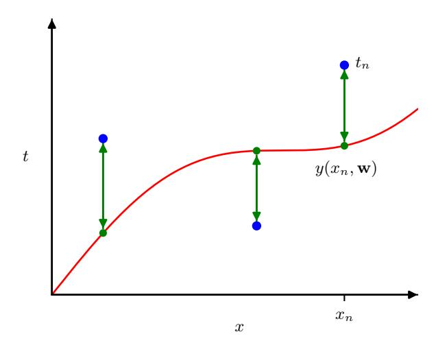
the squares of the differences between the predictions $y(x_n, \mathbf{w})$ for each data point $x_n$ and the corresponding target value $t_n$, given by
$$E(\mathbf{w}) = \frac{1}{2} \sum_{n=1}^{N} \{y(x_n, \mathbf{w}) - t_n\}^2 $$ (1.2)
where the factor of 1/2 is included for later convenience. We will later derive this error function starting from probability theory. Here we simply note that it is a nonnegative quantity that would be zero if, and only if, the function $y(x, \mathbf{w})$ were to pass exactly through each training data point. The geometrical interpretation of the sum-of-squares error function is illustrated in Figure 1.5.
We can solve the curve fitting problem by choosing the value of $\mathbf{w}$ for which $E(\mathbf{w})$ is as small as possible. Because the error function is a quadratic function of the coefficients $\mathbf{w}$, its derivatives with respect to the coefficients will be linear in the elements of $\mathbf{w}$, and so the minimization of the error function has a unique solution, denoted by $\mathbf{w}^*$, which can be found in closed form. The resulting polynomial is given by the function $y(x,\mathbf{w}^*)$.
1.2.4 Model complexity
There remains the problem of choosing the order M of the polynomial, and as we will see this will turn out to be an example of an important concept called model comparison or model selection. In Figure 1.6, we show four examples of the results of fitting polynomials having orders M=0,1,3, and 9 to the data set shown in Figure 1.4.
Notice that the constant (M=0) and first-order (M=1) polynomials give poor fits to the data and consequently poor representations of the function $\sin(2\pi x)$. The third-order (M=3) polynomial seems to give the best fit to the function $\sin(2\pi x)$ of the examples shown in Figure 1.6. When we go to a much higher order polynomial (M=9), we obtain an excellent fit to the training data. In fact, the polynomial
Section 2.3.4
Exercise 4.1
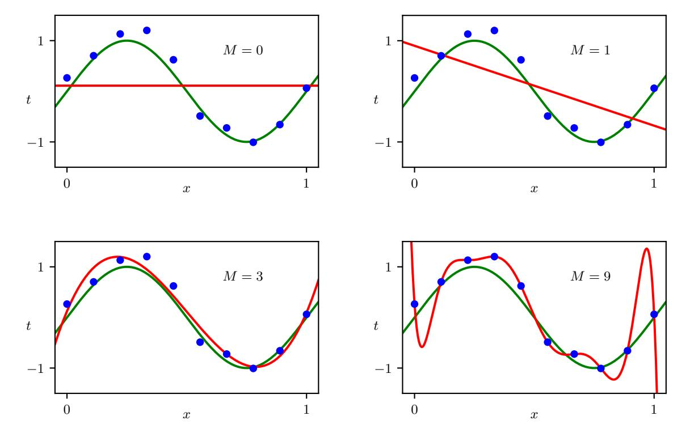
Figure 1.6 Plots of polynomials having various orders M, shown as red curves, fitted to the data set shown in Figure 1.4 by minimizing the error function (1.2).
passes exactly through each data point and $E(\mathbf{w}^*) = 0$. However, the fitted curve oscillates wildly and gives a very poor representation of the function $\sin(2\pi x)$. This latter behaviour is known as over-fitting.
Our goal is to achieve good generalization by making accurate predictions for new data. We can obtain some quantitative insight into the dependence of the generalization performance on M by considering a separate set of data known as a test set, comprising 100 data points generated using the same procedure as used to generate the training set points. For each value of M, we can evaluate the residual value of $E(\mathbf{w}^{\star})$ given by (1.2) for the training data, and we can also evaluate $E(\mathbf{w}^{\star})$ for the test data set. Instead of evaluating the error function $E(\mathbf{w})$, it is sometimes more convenient to use the root-mean-square (RMS) error defined by
$$E_{\text{RMS}} = \sqrt{\frac{1}{N} \sum_{n=1}^{N} \{y(x_n, \mathbf{w}) - t_n\}^2} $$ (1.3)
in which the division by N allows us to compare different sizes of data sets on an equal footing, and the square root ensures that $E_{\rm RMS}$ is measured on the same scale (and in the same units) as the target variable t. Graphs of the training-set and test-set
Figure 1.7 Graphs of the root-meansquare error, defined by (1.3), evaluated on the training set, and on an independent test set, for various values of M.
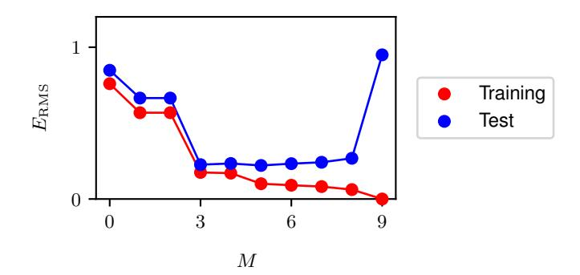
RMS errors are shown, for various values of M, in Figure 1.7. The test set error is a measure of how well we are doing in predicting the values of t for new data observations of t. Note from Figure 1.7 that small values of t give relatively large values of the test set error, and this can be attributed to the fact that the corresponding polynomials are rather inflexible and are incapable of capturing the oscillations in the function $\sin(2\pi x)$. Values of t in the range t in the range t in the generating function $\sin(2\pi x)$, as can be seen for t in Figure 1.6.
For M=9, the training set error goes to zero, as we might expect because this polynomial contains 10 degrees of freedom corresponding to the 10 coefficients $w_0,\ldots,w_9$, and so can be tuned exactly to the 10 data points in the training set. However, the test set error has become very large and, as we saw in Figure 1.6, the corresponding function $y(x,\mathbf{w}^*)$ exhibits wild oscillations.
This may seem paradoxical because a polynomial of a given order contains all lower-order polynomials as special cases. The M=9 polynomial is therefore capable of generating results at least as good as the M=3 polynomial. Furthermore, we might suppose that the best predictor of new data would be the function $\sin(2\pi x)$ from which the data was generated (and we will see later that this is indeed the case). We know that a power series expansion of the function $\sin(2\pi x)$ contains terms of all orders, so we might expect that results should improve monotonically as we increase M.
We can gain some insight into the problem by examining the values of the coefficients $\mathbf{w}^*$ obtained from polynomials of various orders, as shown in Table 1.1. We see that, as M increases, the magnitude of the coefficients typically gets larger. In particular for the M=9 polynomial, the coefficients have become finely tuned to the data. They have large positive and negative values so that the corresponding polynomial function matches each of the data points exactly, but between data points (particularly near the ends of the range) the function exhibits the large oscillations observed in Figure 1.6. Intuitively, what is happening is that the more flexible polynomials with larger values of M are increasingly tuned to the random noise on the target values.
Further insight into this phenomenon can be gained by examining the behaviour of the learned model as the size of the data set is varied, as shown in Figure 1.8. We see that, for a given model complexity, the over-fitting problem become less severe
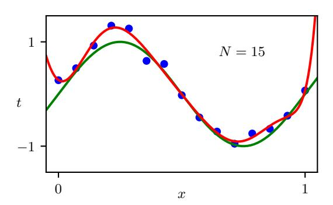
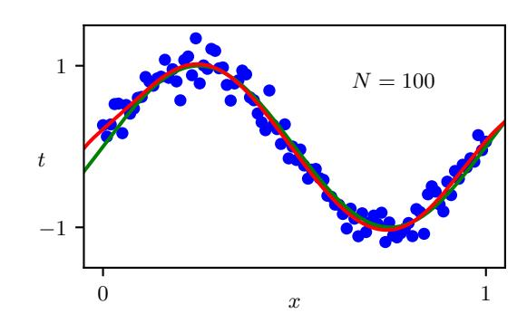
Figure 1.8 Plots of the solutions obtained by minimizing the sum-of-squares error function (1.2) using the M=9 polynomial for N=15 data points (left plot) and N=100 data points (right plot). We see that increasing the size of the data set reduces the over-fitting problem.
as the size of the data set increases. Another way to say this is that with a larger data set, we can afford to fit a more complex (in other words more flexible) model to the data. One rough heuristic that is sometimes advocated in classical statistics is that the number of data points should be no less than some multiple (say 5 or 10) of the number of learnable parameters in the model. However, when we discuss deep learning later in this book, we will see that excellent results can be obtained using models that have significantly more parameters than the number of training data points.
Section 9.3.2
1.2.5 Regularization
There is something rather unsatisfying about having to limit the number of parameters in a model according to the size of the available training set. It would seem more reasonable to choose the complexity of the model according to the complexity of the problem being solved. One technique that is often used to control the overfitting phenomenon, as an alternative to limiting the number of parameters, is that of regularization, which involves adding a penalty term to the error function (1.2) to discourage the coefficients from having large magnitudes. The simplest such penalty
Table 1.1 Table of the coefficients w* for polynomials of various order. Observe how the typical magnitude of the coefficients increases dramatically as the order of the polynomial increases.
| M = 0 | M = 1 | M = 3 | M = 9 | |
|---|---|---|---|---|
| $\overline{w_0^{\star}}$ | 0.11 | 0.90 | 0.12 | 0.26 |
| $w_1^{\star}$ | -1.58 | 11.20 | -66.13 | |
| $w_2^{\star}$ | -33.67 | 1,665.69 | ||
| $w_3^{\star}$ | 22.43 | -15,566.61 | ||
| $w_4^{\star}$ | 76,321.23 | |||
| $w_5^{\star}$ | -217,389.15 | |||
| $w_6^{\star}$ | 370,626.48 | |||
| $w_7^{\star}$ | -372,051.47 | |||
| $w_8^{\star}$ | 202,540.70 | |||
| $w_9^{\star}$ | -46,080.94 |
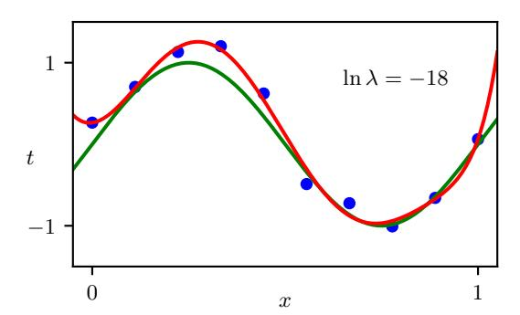
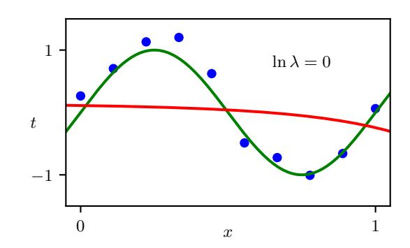
Figure 1.9 Plots of M=9 polynomials fitted to the data set shown in Figure 1.4 using the regularized error function (1.4) for two values of the regularization parameter $\lambda$ corresponding to $\ln \lambda = -18$ and $\ln \lambda = 0$. The case of no regularizer, i.e., $\lambda = 0$, corresponding to $\ln \lambda = -\infty$, is shown at the bottom right of Figure 1.6.
term takes the form of the sum of the squares of all of the coefficients, leading to a modified error function of the form
$$\widetilde{E}(\mathbf{w}) = \frac{1}{2} \sum_{n=1}^{N} \{y(x_n, \mathbf{w}) - t_n\}^2 + \frac{\lambda}{2} ||\mathbf{w}||^2$$ (1.4)
where $\|\mathbf{w}\|^2 \equiv \mathbf{w}^T \mathbf{w} = w_0^2 + w_1^2 + \ldots + w_M^2$, and the coefficient $\lambda$ governs the relative importance of the regularization term compared with the sum-of-squares error term. Note that often the coefficient $w_0$ is omitted from the regularizer because its inclusion causes the results to depend on the choice of origin for the target variable (Hastie, Tibshirani, and Friedman, 2009), or it may be included but with its own regularization coefficient. Again, the error function in (1.4) can be minimized exactly in closed form. Techniques such as this are known in the statistics literature as shrinkage methods because they reduce the value of the coefficients. In the context of neural networks, this approach is known as weight decay because the parameters in a neural network are called weights and this regularizer encourages them to decay towards zero.
Figure 1.9 shows the results of fitting the polynomial of order M=9 to the same data set as before but now using the regularized error function given by (1.4). We see that, for a value of $\ln \lambda = -18$, the over-fitting has been suppressed and we now obtain a much closer representation of the underlying function $\sin(2\pi x)$. If, however, we use too large a value for $\lambda$ then we again obtain a poor fit, as shown in Figure 1.9 for $\ln \lambda = 0$. The corresponding coefficients from the fitted polynomials are given in Table 1.2, showing that regularization has the desired effect of reducing the magnitude of the coefficients.
The impact of the regularization term on the generalization error can be seen by plotting the value of the RMS error (1.3) for both training and test sets against $\ln \lambda$, as shown in Figure 1.10. We see that $\lambda$ now controls the effective complexity of the model and hence determines the degree of over-fitting.
Section 9.2.1 Exercise 4.2
Figure 1.10 Graph of the root-mean-square error (1.3) versus $\ln \lambda$ for the M=9 polynomial.
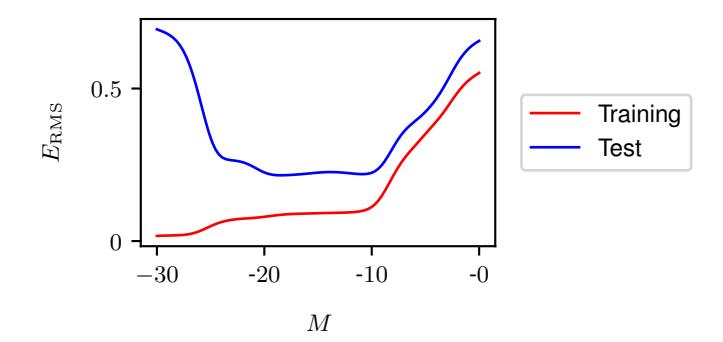
1.2.6 Model selection
The quantity $\lambda$ is an example of a hyperparameter whose values are fixed during the minimization of the error function to determine the model parameters $\mathbf{w}$. We cannot simply determine the value of $\lambda$ by minimizing the error function jointly with respect to $\mathbf{w}$ and $\lambda$ since this will lead to $\lambda \to 0$ and an over-fitted model with small or zero training error. Similarly, the order M of the polynomial is a hyperparameter of the model, and simply optimizing the training set error with respect to M will lead to large values of M and associated over-fitting. We therefore need to find a way to determine suitable values for hyperparameters. The results above suggest a simple way of achieving this, namely by taking the available data and partitioning it into a training set, used to determine the coefficients $\mathbf{w}$, and a separate validation set, also called a hold-out set or a development set. We then select the model having the lowest error on the validation set. If the model design is iterated many times using a data set of limited size, then some over-fitting to the validation data can occur, and so it may be necessary to keep aside a third test set on which the performance of the selected model can finally be evaluated.
For some applications, the supply of data for training and testing will be limited. To build a good model, we should use as much of the available data as possible for training. However, if the validation set is too small, it will give a relatively noisy estimate of predictive performance. One solution to this dilemma is to use cross-
Table 1.2 Table of the coefficients $\mathbf{w}^*$ for M=9 polynomials with various values for the regularization parameter $\lambda$. Note that $\ln \lambda = -\infty$ corresponds to a model with no regularization, i.e., to the graph at the bottom right in Figure 1.6. We see that, as the value of $\lambda$ increases, the magnitude of a typical coefficient gets smaller.
| $\ln \lambda = -\infty$ | $$\ln \lambda = -18$$ | $$\ln \lambda = 0$$ | |
|---|---|---|---|
| $w_0^{\star}$ | 0.26 | 0.26 | 0.11 |
| $w_1^{\star}$ | -66.13 | 0.64 | -0.07 |
| $w_2^{\star}$ | 1,665.69 | 43.68 | -0.09 |
| $w_3^{\star}$ | -15,566.61 | -144.00 | -0.07 |
| $w_4^{\star}$ | 76,321.23 | 57.90 | -0.05 |
| $w_5^{\star}$ | -217,389.15 | 117.36 | -0.04 |
| $w_6^{\star}$ | 370,626.48 | 9.87 | -0.02 |
| $w_7^{\star}$ | -372,051.47 | -90.02 | -0.01 |
| $w_8^{\star}$ | 202,540.70 | -70.90 | -0.01 |
| $w_9^{\star}$ | -46,080.94 | 75.26 | 0.00 |
Figure 1.11 The technique of S-fold cross-validation, illustrated here for the case of S=4, involves taking the available data and partitioning it into S groups of equal size. Then S-1 of the groups are used to train a set of models that are then evaluated on the remaining group. This procedure is then repeated for all S possible choices for the held-out group, indicated here by the red blocks, and the performance scores from the S runs are then averaged.
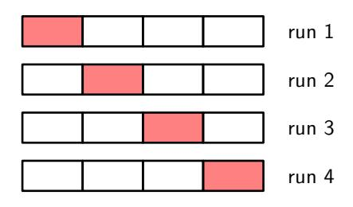
validation, which is illustrated in Figure 1.11. This allows a proportion (S-1)/S of the available data to be used for training while making use of all of the data to assess performance. When data is particularly scarce, it may be appropriate to consider the case S=N, where N is the total number of data points, which gives the leave-one-out technique.
The main drawback of cross-validation is that the number of training runs that must be performed is increased by a factor of S, and this can prove problematic for models in which the training is itself computationally expensive. A further problem with techniques such as cross-validation that use separate data to assess performance is that we might have multiple complexity hyperparameters for a single model (for instance, there might be several regularization hyperparameters). Exploring combinations of settings for such hyperparameters could, in the worst case, require a number of training runs that is exponential in the number of hyperparameters. The state of the art in modern machine learning involves extremely large models, trained on commensurately large data sets. Consequently, there is limited scope for exploration of hyperparameter settings, and heavy reliance is placed on experience obtained with smaller models and on heuristics.
This simple example of fitting a polynomial to a synthetic data set generated from a sinusoidal function has illustrated many key ideas from machine learning, and we will make further use of this example in future chapters. However, real-world applications of machine learning differ in several important respects. The size of the data sets used for training can be many orders of magnitude larger, and there will generally be many more input variables, perhaps numbering in the millions for image analysis, for example, as well as multiple output variables. The learnable function that relates outputs to inputs is governed by a class of models known as neural networks, and these may have a large number of parameters perhaps numbering in the hundreds of billions, and the error function will be a highly nonlinear function of those parameters. The error function can no longer be minimized through a closed-form solution and instead must be minimized through iterative optimization techniques based on evaluation of the derivatives of the error function with respect to the parameters, all of which may require specialist computational hardware and incur substantial computational cost.
Figure 1.12 Schematic illustration showing two neurons from the human brain. These electrically active cells communicate through junctions called synapses whose strengths change as the network learns.
1.3. A Brief History of Machine Learning
Machine learning has a long and rich history, including the pursuit of multiple alternative approaches. Here we focus on the evolution of machine learning methods based on neural networks as these represent the foundation of deep learning and have proven to be the most effective approach to machine learning for real-world applications.
Neural network models were originally inspired by studies of information processing in the brains of humans and other mammals. The basic processing units in the brain are electrically active cells called neurons, as illustrated in Figure 1.12. When a neuron 'fires', it sends an electrical impulse down the axon where it reaches junctions, called synapses, which form connections with other neurons. Chemical signals called neurotransmitters are released at the synapses, and these can stimulate, or inhibit, the firing of subsequent neurons.
A human brain contains around 90 billion neurons in total, each of which has on average several thousand synapses with other neurons, creating a complex network having a total of around 100 trillion ($10^{14}$) synapses. If a particular neuron receives sufficient stimulation from the firing of other neurons then it too can be induced to fire. However, some synapses have a negative, or inhibitory, effect whereby the firing of the input neuron makes it less likely that the output neuron will fire. The extent to which one neuron can cause another to fire depends on the strength of the synapse, and it is changes in these strengths that represents a key mechanism whereby the brain can store information and learn from experience.
These properties of neurons have been captured in very simple mathematical models, known as artificial neural networks, which then form the basis for computational approaches to learning (McCulloch and Pitts, 1943). Many of these models describe the properties of a single neuron by forming a linear combination of the outputs of other neurons, which is then transformed using a nonlinear function. This
Figure 1.13 A simple neural network diagram representing the transformations (1.5) and (1.6) describing a single neuron. The polynomial function (1.1) can be seen as a special case of this model.
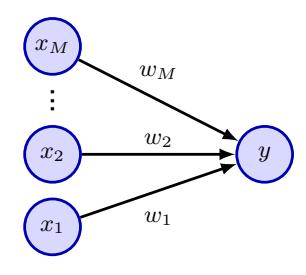
can be expressed mathematically in the form
$$a = \sum_{i=1}^{M} w_i x_i \tag{1.5}$$
$$y = f(a) (1.6)$$
where $x_1, \ldots, x_M$ represent M inputs corresponding to the activities of other neurons that send connections to this neuron, and $w_1, \ldots, w_M$ are continuous variables, called weights, which represent the strengths of the associated synapses. The quantity a is called the pre-activation, the nonlinear function $f(\cdot)$ is called the activation function, and the output y is called the activation. We can see that the polynomial (1.1) can be viewed as a specific instance of this representation in which the inputs $x_i$ are given by powers of a single variable x, and the function $f(\cdot)$ is just the identity f(a) = a. The simple mathematical formulation given by (1.5) and (1.6) has formed the basis of neural network models from the 1960s up to the present day, and can be represented in diagram form as shown in Figure 1.13.
1.3.1 Single-layer networks
The history of artificial neural networks can broadly be divided into three distinct phases according to the level of sophistication of the networks as measured by the number of 'layers' of processing. A simple neural model described by (1.5) and (1.6) can be viewed as having a single layer of processing corresponding to the single layer of connections in Figure 1.13. One of the most important such models in the history of neural computing is the perceptron (Rosenblatt, 1962) in which the activation function $f(\cdot)$ is a step function of the form
$$f(a) = \begin{cases} 0, & \text{if } a \leq 0, \\ 1, & \text{if } a > 0. \end{cases} $$ (1.7)
This can be viewed as a simplified model of neural firing in which a neuron fires if, and only if, the total weighted input exceeds a threshold of 0. The perceptron was pioneered by Rosenblatt (1962), who developed a specific training algorithm that has the interesting property that if there exists a set of weight values for which the perceptron can achieve perfect classification of its training data then the algorithm is guaranteed to find the solution in a finite number of steps (Bishop, 2006). As well as a learning algorithm, the perceptron also had a dedicated analogue hardware
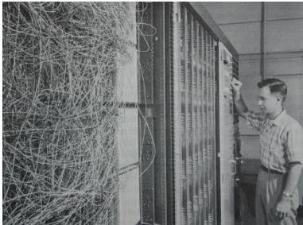
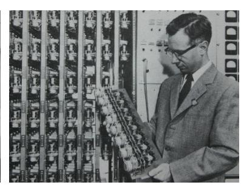
Figure 1.14 Illustration of the Mark 1 perceptron hardware. The photograph on the left shows how the inputs were obtained using a simple camera system in which an input scene, in this case a printed character, was illuminated by powerful lights, and an image focused onto a $20 \times 20$ array of cadmium sulphide photocells, giving a primitive 400-pixel image. The perceptron also had a patch board, shown in the middle photograph, which allowed different configurations of input features to be tried. Often these were wired up at random to demonstrate the ability of the perceptron to learn without the need for precise wiring, in contrast to a modern digital computer. The photograph on the right shows one of the racks of learnable weights. Each weight was implemented using a rotary variable resistor, also called a potentiometer, driven by an electric motor thereby allowing the value of the weight to be adjusted automatically by the learning algorithm.
implementation, as shown in Figure 1.14. A typical perceptron configuration had multiple layers of processing, but only one of those layers was learnable from data, and so the perceptron is considered to be a 'single-layer' neural network.
At first, the ability of perceptrons to learn from data in a brain-like way was considered remarkable. However, it became apparent that the model also has major limitations. The properties of perceptrons were analysed by Minsky and Papert (1969), who gave formal proofs of the limited capabilities of single-layer networks. Unfortunately, they also speculated that similar limitations would extend to networks having multiple layers of learnable parameters. Although this latter conjecture proved to be wildly incorrect, the effect was to dampen enthusiasm for neural network models, and this contributed to the lack of interest, and funding, for neural networks during the 1970s and early 1980s. Furthermore, researchers were unable to explore the properties of multilayered networks due to the lack of an effective algorithm for training them, since techniques such as the perceptron algorithm were specific to single-layer models. Note that although perceptrons have long disappeared from practical machine learning, the name lives on because a modern neural network is also sometimes called a multilayer perceptron or MLP.
1.3.2 Backpropagation
The solution to the problem of training neural networks having more than one layer of learnable parameters came from the use of differential calculus and the application of gradient-based optimization methods. An important change was to replace the step function (1.7) with continuous differentiable activation functions having a non-zero gradient. Another key modification was to introduce differentiable error functions that define how well a given choice of parameter values predicts the target variables in the training set. We saw an example of such an error function when we
Figure 1.15 A neural network having two layers of parameters in which arrows denote the direction of information flow through the network. Each of the hidden units and each of the output units computes a function of the form given by (1.5) and (1.6) in which the activation function $f(\cdot)$ is differentiable.
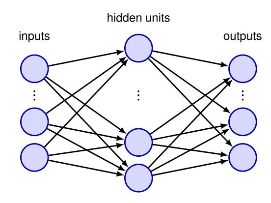
Section 1.2.3
used the sum-of-squares error function (1.2) to fit polynomials.
With these changes, we now have an error function whose derivatives with respect to each of the parameters in the network can be evaluated. We can now consider networks having more than one layer of parameters. Figure 1.15 shows a simple network with two processing layers. Nodes in the middle layer called hidden units because their values do not appear in the training set, which only provides values for inputs and outputs. Each of the hidden units and each of the output units in Figure 1.15 computes a function of the form given by (1.5) and (1.6). For a given set of input values, the states of all of the hidden and output units can be evaluated by repeated application of (1.5) and (1.6) in which information is flowing forward through the network in the direction of the arrows. For this reason, such models are sometimes also called feed-forward neural networks.
To train such a network the parameters are first initialized using a random number generator and are then iteratively updated using gradient-based optimization techniques. This involves evaluating the derivatives of the error function, which can be done efficiently in a process known as error backpropagation. In backpropagation, information flows backwards through the network from the outputs towards the inputs (Rumelhart, Hinton, and Williams, 1986). There exist many different optimization algorithms that make use of gradients of the function to be optimized, but the one that is most prevalent in machine learning is also the simplest and is known as stochastic gradient descent.
Chapter 8
Chapter 7
The ability to train neural networks having multiple layers of weights was a breakthrough that led to a resurgence of interest in the field starting around the mid-1980s. This was also a period in which the field moved beyond a focus on neurobiological inspiration and developed a more rigorous and principled foundation (Bishop, 1995b). In particular, it was recognized that probability theory, and ideas from the field of statistics, play a central role in neural networks and machine learning. One key insight is that learning from data involves background assumptions, sometimes called prior knowledge or inductive biases. These might be incorporated explicitly, for example by designing the structure of a neural network such that the classification of a skin lesion does not depend on the location of the lesion within the image, or they might take the form of implicit assumptions that arise from the mathematical
form of the model or the way it is trained.
The development of backpropagation and gradient-based optimization dramatically increased the capability of neural networks to solve practical problems. However, it was also observed that in networks with many layers, it was only weights in the final two layers that would learn useful values. With a few exceptions, notably models used for image analysis known as convolutional neural networks (LeCun et al., 1998), there were very few successful applications of networks having more than two layers. Again, this constrained the complexity of the problems that could be addressed effectively with these kinds of network. To achieve reasonable performance on many applications, it was necessary to use hand-crafted pre-processing to transform the input variables into some new space where, it was hoped, the machine learning problem would be easier to solve. This pre-processing stage is sometimes also called feature extraction. Although this approach was sometimes effective, it would clearly be much better if features could be learned from the data rather than being hand-crafted.
By the start of the new millennium, the available neural network methods were once again reaching the limits of their capability. Researchers began to explore a raft of alternatives to neural networks, such as kernel methods, support vector machines, Gaussian processes, and many others. Neural networks fell into disfavour once again, although a core of enthusiastic researchers continued to pursue the goal of a truly effective approach to training networks with many layers.
1.3.3 Deep networks
The third, and current, phase in the development of neural networks began during the second decade of the 21st century. A series of developments allowed neural networks with many layers of weights to be trained effectively, thereby removing previous limitations on the capabilities of these techniques. Networks with many layers of weights are called deep neural networks and the sub-field of machine learning that focuses on such networks is called deep learning (LeCun, Bengio, and Hinton, 2015).
One important theme in the origins of deep learning was a significant increase in the scale of neural networks, measured in terms of the number of parameters. Although networks with a few hundred or a few thousand parameters were common in the 1980s, this steadily rose to the millions, and then billions, whereas current state-of-the-art models can have in the region of one trillion $(10^{12})$ parameters. Networks with many parameters require commensurately large data sets so that the training signals can produced good values for those parameters. The combination of massive models and massive data sets in turn requires computation on a massive scale when training the model. Specialist processors called graphics processing units, or GPUs, which had been developed for very fast rendering of graphical data for applications such as video games, proved to be well suited to the training of neural networks because the functions computed by the units in one layer of a network can be evaluated in parallel, and this maps well onto the massive parallelism of GPUs (Krizhevsky, Sutskever, and Hinton, 2012). Today, training for the largest models is performed on large arrays of thousands of GPUs linked by specialist high-speed interconnections.